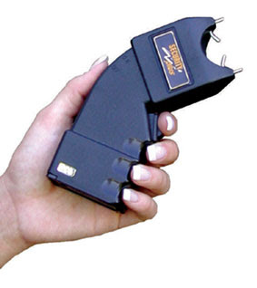

With respect to the use of stun guns to administer electro-shock trauma to small children, the State and its agents apply a sliding scale of official charges and punishments.
When a police officer subdues a child as young as five years of age by treating him to a 50,000-volt shock, this is a law enforcement decision that will be the subject of an official review.
Sure, the officer's actions will eventually be vindicated, but in the interest of good public relations the officer, his superiors, and the local media have to undergo an intricate ritual, as stylized as Kabuki theater, before announcing the official inquiry's foregone conclusion.
When a group of Florida prison guards subject scores of children, ranging in age from 5 to 17, to 50,000-volt shocks as a kind of bizarre prank, this is a lapse of judgment that may have adverse career consequences -- up to and including termination -- but no criminal charges or intervention by the Department of Children and Families.
On more than a few occasions, as I've read about or seen coverage of the use of Tasers and similar portable agonizers on young children, I've been forced to exclaim, "Do those people have children of their own?!" Well, at least some of them do, and see nothing amiss in cajoling them into receiving a couple of Pavlovian shocks. And so the public memory is refreshed with another illustration of the fact that government "service" selects for a personality type in which stupidity and sadism are unusually salient traits.
In one of the "playful" incidents, children were arranged in a circle holding hands so that they could share the charge when one of them was shocked. At another prison, children were shocked individually by having a stun gun pressed against their bodies. At least two of the kids were sent "sprawling to the floor, crying out in pain and clutching at agonizing burns on their arms," and one of them ended up in the hospital.
One would expect that criminal charges would ensue as a result of those incidents. One would be wrong. Three employees -- Lt. Russell Bourgault and Sgt. Walter Schmidt, 14-year veterans of the prison system, and six-yet vet Sgt. Charmaine Davis -- were fired. Maj. Seth Adams, a 19-year veteran, and Lt. P.J. Weisner, who had 11 years in the system, resigned. According to news reports, an additional 16 employees face unspecified "discipline."
Thus far, however, there are no pending criminal charges, and the Florida State Department of Children and Family Services (CFS), one of the nation's most energetic child-snatching bureaucracies (it produced Janet Reno, remember), has shown no interest in separating the injured children from their parents. This is a remarkably restrained official reaction, one likely influenced by the fact that the parents involved in this scandal are or were government employees.
On the other hand, when a privately employed father dealing with a misbehaving 14-year-old son decides to eschew the belt in favor of a home-made electric stun gun, this is an act of felony child abuse and domestic battery worthy of the full punitive attention of the state law enforcement apparatus.
Fatal "tough love" in Florida: Prosecutor Pam Bondi watches a recording of the last minutes of Martin Anderson, a 14-year-old who died at a teen "boot camp" after being abused by the staff.

Is there some special significance to the fact that all of these incidents involving the electro-shock of children took place in Florida, a state where more than a few children have perished in "boot camps" for juvenile offenders? I take note of that fact without venturing an explanation.
Police "resource officers" stationed in that state's public schools have used Tasers -- the full-fledged, consistently lethal instrument, not the relatively low-yield stun guns used in the last two examples -- on kindergarten-age children with impunity on the assumption that the Taser is a relatively safe and humane implement of pain compliance.
So it may have been inevitable that a Florida entrepreneur would make a stun gun available to parents on the assumption that a mild jolt of electricity would be a safer and more effective corrective than any of the more familiar modes of administering corporal punishment. In 2003, a massage therapist from Boca Raton named Steve Robnor devised and marketed a device called the B-Stik, a billy club-shaped implement designed to deliver a brief shock -- of roughly the same intensity as a bee sting -- to an unruly child.
Robnor insisted that the B-Stik would leave no lasting marks, and do no significant harm. "It's a safer alternative for people who physically discipline their children," Robnor insisted. "Children should not be subjected to conventional physical discipline methods that have proven harmful. This product will enable a parent or caregiver to physically correct a child's misbehavior safely, effectively, and most of all, responsibly."
According to Robnor, his kiddie-prod actually removed the risk of "overdoing" physical discipline (and had other massage-related applications as well). Leaving aside the merits -- such as they are -- of Robnor's product, it's important to recognize that much of his sales patter reflected the views of the Florida state child-snatcher bureaucracy, and capitalized on a market niche they probably helped to create.
At the time the B-Stik was introduced, the official position of the Florida Department of Child and Family Services was that spanking of any kind and duration was to be discouraged and dealt with as potential abuse. "No child needs a spanking," sniffed CFS spokeswoman Marilyn Munoz. "Spanking can be dangerous. You never know when a child can be harmed if a parent loses control. Children don't need to be hit in order to be taught how to behave." As far as the CFS was concerned, shocking a child with a low-intensity cattle prod, while not desirable, was no worse than a conventional spanking.
Spare the prod? Douglas Dycus, arrested and prosecuted for using a stun gun to discipline a teenage son.

At least one Florida parent took that idea to heart. In 2005, 40-year-old Douglas Dycus was "hotlined" to the CFS and arrested for using a cattle prod-style stun gun to discipline his 14-year-old son. According to Dycus, he was frequently frustrated by the inattentiveness of his teenage son -- a problem familiar to parents of teenagers everywhere. On one evening, as the family prepared to leave for an engagement, the 14-year-old was "wrestling" with a younger brother and refusing to obey instructions that he stop scuffling and get in the car.
So Dycus retrieved a small stunning device, and applied it to the upper arm of his son, with two predictable results: The youngster let out a sharp yelp, and then he got into the car.
A case of this sort being irresistible to tabloid media of all varieties, Dycus's attorney, Richard Kibbey, soon turned up on Joe Scarborough's old MSNBC evening program. Kibbey offered a two-pronged defense of Dycus's actions: First, the innate right of parents to discipline their children includes the use of appropriate physical chastisement; and second, that the means employed by Dycus were much milder than those used, with increasing frequency, by police who employ Tasers when dealing with unruly schoolchildren.
"Some parents can reprimand a child and get order," Kibbey pointed out. "Some parents need to slap or spank a child to get order. Some parents need to use a belt. Police and court systems should not be second-guessing a parent unless it involves torture or [physical punishment] for no valid reason whatsoever, which is not the case here."
Furthermore, Kibbey continued, "there's a double standard here in Florida, as well as across the nation. We have all been seeing in the last few months the police are using Taser guns, not handheld, but Taser guns, and shooting darts into 6-year-old children, a 12-year-old girl in Florida [last] November who was truant. She was shot because she skipped class that day. The police were never prosecuted and the police say they're -- quote -- `reviewing their policy.'" Those officers were never prosecuted, yet a parent, who knows his child better than anyone, who knows the history of this child, is no being prosecuted. Don't you think that's a double standard?"

"Your agonizer, please!" The Mirror Universe's version of Transporter Chief Kyle pays for his inattention to a power surge by absorbing a punitive "agonizer" charge administered by Mirror Spock. You just can't trust guys who wear sinister Van Dyke beards, y'know....
Now, one can agree with Kibbey's reasoning without presenting a brief on behalf of parental use of cattle prods.
As the father of six children, none of which could be described as a quiet, placid introvert, I can understand the occasional need to administer discipline of an unpleasantly exemplary nature. Although I'm not disinclined toward corporal punishment, I consider it to be of extremely limited utility and employ it very sparingly.
Once, while visiting an authoritarian church, I overheard a conversation in which a father, in a voice colored with concern, described his young son as a "willful, high-spirited" individual; with an expression of almost vindictive satisfaction, his interlocutor exclaimed, "Well, the good thing is that as his father, it's your responsibility to break that will."
Try as I might, I can't understand how anyone -- let alone someone professing to worship the Author of the Sermon on the Mount -- could conclude that raising children involves breaking them in any sense. Certainly, it involves teaching them to restrain and discipline their appetites, to practice deferral of gratification, to treat others with respect and deference where appropriate, and to obey God's law (as summarized in the Two Great Commandments). It means helping them to understand and practice self-regulation.
But "breaking" another human being in any sense or context is abusive by definition -- irrespective of the means employed.

It stands to reason that the last thing the architects of a collectivist society want is a population of self-regulating, self-governing free individuals -- people of the sort who usually come from homes in which parental authority is firmly and fairly exercised, and disciplinary decisions are not subject to the appellate jurisdiction of the nulliparous agony aunts running the local child-grabber bureaucracy.
This helps explain why, under the obscene doctrine of Parens Patriae, the same State that for a century and a half or so has been diligently undermining parental authority in the home has steadily increased its arbitrary power over children in public schools and similar settings.
It's now reached a point where misbehaving children barely old enough to speak or read are subject to arrest, handcuffing, and electro-shock torture at the hands of the same State-employed strangers who stand prepared to "protect" those same children from the imperfections of their own parents.
 On sale now.
On sale now.Dum spiro, pugno!
22 comments:
Man dies after police Taser him
Houston Chronicle - 5 hours ago
http://www.chron.com/disp/story.mpl/ap/tx/6430203.html
Anybody, and I DO mean ANYBODY, who attempts to stand in between me and my kids, has effectively called down the thunder.
My children are my most precious possessions, and I would willingly lay down my life to protect them. A Gubmint drone that foolishly underestimates the strength of my will on that point will find themselves facing an unscheduled trip to eternity.
I'm sometimes accused of relating almost anything negative to pro-war sentiments. There's an implied "but" here, of course: But I see the cruelty you describe--even toward children!--as being, if not caused, at least more likely to arise and, very significantly, more acceptable by the populace when complacency toward aggression is so pronounced.
And if that's a run-on sentence, so be it.
My children are my most precious possessions, and I would willingly lay down my life to protect them.Last week, as part of the ongoing education of my older sons (three-month old Justus is still too young), I made them sit with me and watch The Patriot.
Anybody who has seen that film, and remembers how Benjamin and his sons reacted to the threat to hang Gabriel, will understand why I mention it in this context.
What’s a little pain and suffering, or even a hospital visit or two, when we’re teaching these kids a good life lesson: OBEY, or else?
Did you see the scary photograph of Boy Scouts wearing “police”-style uniforms and carrying realistic looking, presumably fake automatic rifles?
Taken together these two incidents are clearly part of a larger pattern of indoctrination of youth into a totalitarian mindset.
I’m an ardent fan of the original Star Trek, so I was most pleased to see you refer to the episode titled Mirror, Mirror featuring the “agonizer,” an episode that presciently foresaw the taser forty years ago!
Dave - Erstwhile Urban Wanderer
Will
You sound like a wonderful, understanding father. The insights you have on channeling a child's strong will instead of breaking it are rare among those conservative christian families across the country. Your kids are blessed and will benefit greatly from your solid sane views.
Stuart Bevin
Which part of the film, Will? The tomahawk chopping scenes or....? LOL!!!
After reading the Chronicle article... thanks anonymous, whoever you are, I get the impression that a dead "citizen" is easier to process than a living lawsuit.
How much longer before Tuesdays are Soylent Green days?
@Dave...
Good Grief. Why not just call them "Obama Jugend" or "Homeland Pioneers" while they're at it.
Here is another apropos Mirror, Mirror quote:
"In an insane society, the sane man must appear insane."
Oy Vey!
I never understood the Abu Ghraib controversy that is an everyday occurrence at prisons here in the freedom filled jesus loving kapitalist workers utopia. Just hoist your made in China flags and place another magnet on your car if it troubles you. Big bro and mommygov will make it all better.
This has been a long, ongoing shift.
In the battle for civil rights, by far the largest loser has been the child. For years, and by tradition, the child has been considered nothing more than property of the parents. Seeing the obvious injustice that can arise here, society has strived to protect the child, but instead of providing individual rights and protections, the state has decided to skip the messy middle ground of Individual Rights, Liberty, and Responsibility, and move directly into the realm of collective rights.
So now, instead of the child being chattle property of the parents, the child has become chattle property of the state, arguably its goal for all of us.
This is especially obvious when you consider the nature of child protective services in the first place, they arent reprimanding the parents for abusing the rights of the child, but rather for missusing state property that was allowed to them, and in response, they take back that property, like they would if a state employee used his official vehicle for unofficial purposes. No harm to the child needs to be demonstrated, only that will of the state has been violated, like in the current Danny Hauser case.
Makes a person wonder how many have died, from being tasered, that had unlying health issues (such as myself) say from a heart ailment, etc? Before these morons get taser happy (any ole reason will due) they'd better stop to think "Hey, thsi could be my Dad
(or Mom) or kid brother." No rhyme or reason for all this cruelty.
And, of course, were you or I to tase our child, federal Lautenberg "domestic violence" provisions would make us "prohibited persons," deemed unworthy by the state to keep and bear arms--forever.
I don't suppose any of the state-employed parents who served their kids up are in any danger of that...?
Anon @1:48, according to Truth… not Tasers “List of the Dead”, 409 people (including 25 Canadians) have died after being tased between 9/28/99 and 5/17/09. Since mid-2005, the monthly average has been about seven per month. I would venture to say that most had either underlying health problems, mental problems, or were drug users. Some were tased repeatedly leading to death. Some were already in custody and tasing was just part of being tortured to death.
The list of dead so far this year includes “a 16-year-old boy, a 15-year-old boy — and a 17-year-old boy who became at least the fifth 17-year-old to die in North America proximal to the taser used by police.”
Disturbing the Peace- On the inalienable right to "excessively noisy sex"
At the end of April, Caroline Cartwright, a 48-year-old housewife from Wearside in the north east of England, was remanded in custody for having "excessively noisy sex." The cops took her in after neighbors complained of hearing her "shouting and groaning" and her "bed banging against the wall of her home." Cartwright has, quite reasonably, defended her inalienable right to be a howler: "I can't stop making noise during sex. It's unnatural to not make any noises and I don't think that I am particularly loud."
Pleasurable groaning and bed-banging are common noises in crowded towns and cities across the civilized world. Most of us deal with them by sticking a CD in the stereo. Those who complain are normally told to stop being prudish or to have a discreet chat with the creators of the offending sex sounds. So how did Cartwright's expressions of noisy joy become a police case, which later this month will be ruled on at Newcastle Crown Court, one of the biggest courts in the north of England?
Because, unbelievably, Cartwright had previously been served with an Anti-Social Behaviour Order (ASBO)—a civil order that is used to control the minutiae of British people's behaviour—that forbade her from making "excessive noise during sex" anywhere in England.
And these Anti-Social Behaviour Orders?!!! What in the hell was the thought behind these?
Posted by Penny at 10:50 AM 0 comments
Labels: big brother, Britian
Anti-Social Behaviour Orders
Alot of Americans are chomping at the bit to make the rest of America be under many such orders and with stiffer penalties or to expand or change what is present. The wave coming from over there eventually reaches here, in every instance, doesn't it?
Ever increasing age for official adulthood.
Seat-belt laws.
Spanking.
Being in public without a camera looking at you.
Online gambling.
Smoking.
Cell phone use while driving.
Pants too low.
Stereo too loud.
Bad/inappropriate humor.
Ammo possession.
Animal possession.
Too big of house possession.
Too big of car possession.
Too small of tax obligation.
Living too far away from the city.
Not stopping long enough at a stop sign.
Running a red light with no other traffic around.
Home schooling.
Free-speech.
Gun owning.
Self-determined Patriotism.
Self-determination.
Unlicensed unauthorized food growing.
Land owning.
Private property minded.
Capitalistic minded.
Parent.
Bad spelling.
Bad grammar.
Me.
You.
Everyone else but them.
Sorry this was such a discombobulated post.
It's because, for a terrible moment, I'm trying to think like the modern Collectivist and I find it sickening.
Talk about an old Star Trek episode, the one where Kirk has a shock collar placed around his neck & he gets a jolt if he acts up. How about instead, all Americans get one & they get shocked all the time unless they act right. That would make, “them” happy wouldn’t it?
Here's reason 1,302,501 for NEVER letting the state be responsible for children:
Report on Irish child abuse due
The findings of a nine-year inquiry into abuse suffered by children in Catholic institutions in Ireland over a 60-year period are due to be published.
http://news.bbc.co.uk/2/hi/europe/8058224.stm
"civil order that is used to control the minutiae of British people's behaviour—that forbade her from making "excessive noise during sex" anywhere in England."
Ok, that's just hard to believe.
Everyone knows no one in England has has sex!
Another fine example of why government and family matters don't mix - in any context.
A slightly different twist showed up on Glenn Sacks blog a couple weeks back. Apparently woman's daughter, unhappy with a well deserved grounding, used a cord around her neck to create marks which she then proceeded to claim were caused by her mother. The latter was promptly arrested and charged with 'Domestic Violence' and the full weight of gov't persecution that goes along with it.
This country needs to abolish the family courts and CPS along with all of the other family intervening activities/agencies it engages in. Those agencies and their activities are the major cause of family disintegration in this country.
The inmates are truly running the asylum in this country . . .
Sic Semper Tyrannis
But, in the case of the phony marks on the neck, you have to wonder where they ever got the idea in the first place? Hmmmm? Could it be some "helpful" aparatchik within the school or "social" services? Could be.
I'll play the part of the broken record once more. Something I've said time and again to friends and family is that you have no real freedom unless you have the freedom to say "NO".
It's all a moot argument, really, when such mealy mouth minutiae is spewed from statist pie holes.
When does the contract for our abuse at the hands of these clowns finally come to an end? It's like some perpetual multi-generation mortgage with a sliding interest rate that curiously only moves UP!
Ever notice that THEY never let YOU get rid of THEM once and for all? Thats what happens when THEY write the rules for YOU on your dime.
One of my most often quoted sayings is: "You pull your taser and I'll pull my .45 and we'll see who wins this pissing match."
Si vis pacem, para bellum
While this is "old news" to many, it is still a day to day issue for us. My husband was one of those involved in the "tasering" of the children. The media got this so wrong and not one of them wants to get it right.
The children were not "tasered" in the facility where my husband worked. A demonstration of an EID was given where the children were invited to particpate in a circle. The effect was not as great as what you would feel from a static shock. No child was forced into the circle and no child was tormented with the EID. That is not to say that this did not happen at other facilities.
The state needed its scapegoat and my husband was thrown in with the lot. Why hasn't anyone looked into the policy that allows children onto the compound for the "Take Our Daughters and Sons to Work Day"? Prior to this incident becoming big news, there were no policies or procedures for bringing children onto the compound. There were no agendas in place, my husband asked for one.
This demonstration is a common practice that has been going on for at least a decade. It is a demonstration not a horrid abuse of authority, parental or otherwise.
The Department of Children and Families was contacted and thanks be to our God, that they realized it did not rise to the level of abuse.
It continuously amazes me how the public is so naive as to blindly believe whatever they read. And it seriously concerns me that the media is never held accountable for their lack of objectivity and inaccurate reporting.
I am not a government raised, want the state to be my nanny idiot. I am a conservative, Christian, stay at home, homeschooling mom. We love our God, our family and our country.
If I felt that the state employees invovled in this incident needed discipline I would be the first one in line to demand it. The people who need the discipline, who need to be terminated, are the ones higher up the food chain than mere, co's, sergeants and lieutenants.
The state has a hard time getting and keeping employees. Maybe it is the lack of decent pay, horrible job description and less than stellar support you can expect from your employer. Maybe it is the wonderful atmosphere you get to work in day to day. Whatever the reason, you would think that the state would have done a better job investigating this incident and standing behind those that did nothing more than continue a past practice. Put a policy in place for this practice, but don't discipline the ones who only did what has been done for years past. A harmless demonstration not a savage infliction of emotional and physical pain.
Look around, do some research, the record will reflect what I have written here.
Post a Comment